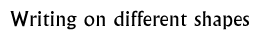

Follow-up 4  |
|
Objectives: To demonstrate that different people use different shapes to write on so that the contents are recognizable. To understand how epigraphers begin to understand ancient scripts and languages.
Materials: Pictures of different shaped Indus seals, cuneiform tablets, modern book with writing, telephone directory, coins, texts in different languages, etc.
Class set-up: Class discussion, individual work
Vocabulary: Seal, communication.
Activity: Remind the pupils that the people of ancient India used different shaped metal or stone seals to record different types of information. Ask the class why this might be useful.
Background information:
How to decipher an unknown scriptSeals Writing Language
© The British Museum |